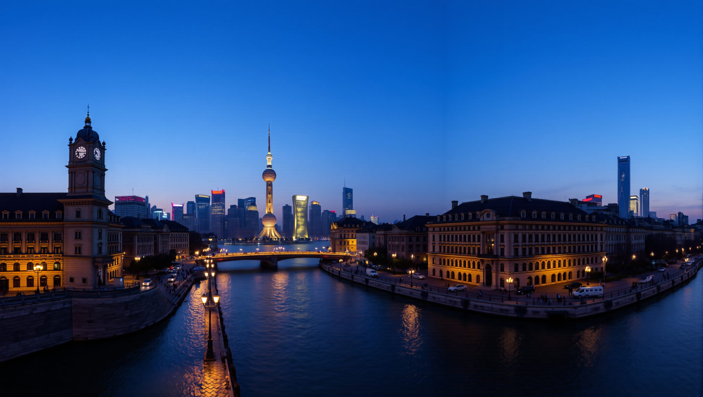
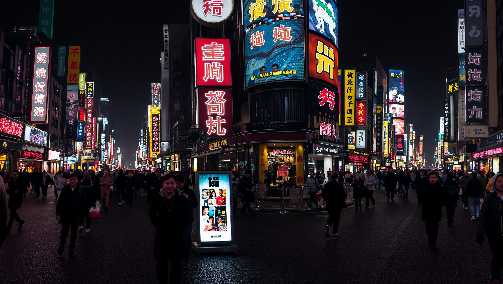
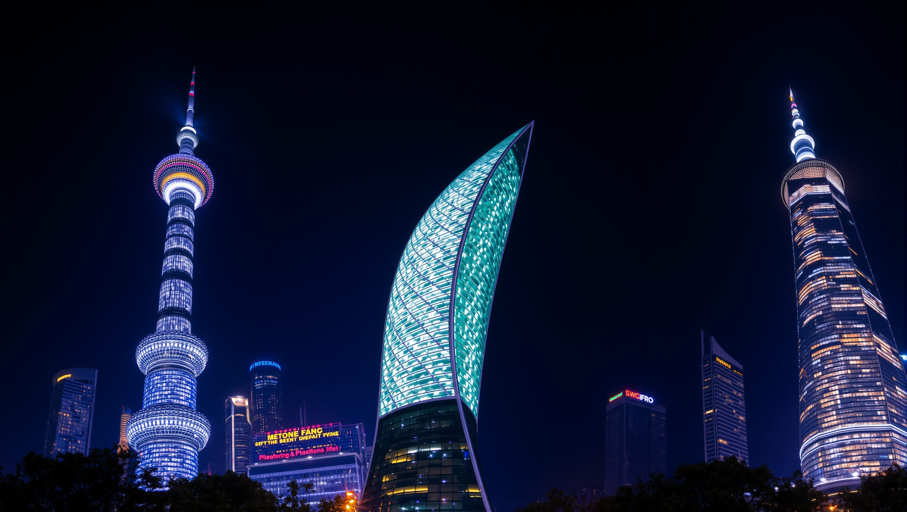

Where the river splits time.
On one bank, a century of colonial stone. On the other, a skyline that looks borrowed from the future. As the lamps come on along the Huangpu, Shanghai shows you both at once.
Arrive at blue hour - both banks ignite at 18:00.

A river of neon.
Step into the current. A mile of signs in a dozen scripts, the crowd moving like water, and the whole street reflected, doubled and glowing, in the rain on the pavement.
Walk it east, toward the Bund, and let it pull you to the river.

Tomorrow, built tall.
Crane your neck. The Pearl, the Tower, the Bottle-opener - a skyline that grew a thousand feet in a single generation, humming with light long after midnight.
The Shanghai Tower deck, floor 118 - the highest view in the city.
Lanterns and steam.
Slip off the boulevard into the lanes. Red lanterns overhead, breakfast woks below, and a quiet that the skyscrapers never quite reach.
Breakfast like a local - scallion pancakes (cong you bing), hot off the iron.
Stillness, by design.
Four hundred years old and built to slow you down - curved roofs, carp-dark water, a pavilion mirrored so perfectly you forget which way is up.
Go at opening - beat the tour groups to the rockery and the koi.
Soup dumplings at midnight.
End where every good day in Shanghai ends - over a bamboo basket of xiao long bao, steam on your glasses, neon at your back.
Xiao long bao the way it was invented - Nanxiang, since 1900.